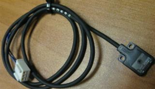

Service History
Subject: NS-8040 Infineon S/N 151247 Output Shuttle 1 pocket B & D Device condition error occurred intermittenly
Handler Model: NS-8040 (S/N: 151247) HMI: F10.14-SIS (Base Ver 2.2)SPEL CT: 3.11ds
Mfg: Mar 2010
Controller: RC520
Date: 19~23 Mar 2010
Symptom
- during jamrate for WFWLB183/217 Quad-site package, output Ouput Shuttle 1 pocket B & D Device condition error occurred
- error occurred intermittenly
- in HMI, using utility for output shuttle sensor adjustment, with devices in all pockets sometimes pocket B or B&D detects "O" (for no device). While most of the time pocket A, B, C & D detects all as "X".
Devices were found sitted in the pockets properly.
- just before Device condition error, output shuttle 1 (with devices still sitted in pockets) is observed to return to Index and return out to output unloading position.
- devices always sitted properly and no missing device when shuttle move out to unloading position
Action
- Quad site kit, check Gate sensors(transmitter & receiver) for pocket B & D
- check timing sensor position(use HMI utility), with device in pockets, timing sensor shines through side slide of output shuttle
- check Gate sensor wiring & connectors(resit connectors)
- check small interface board for Gate sensor's connection
- check connections to Shuttle board
- swapped Shuttle board
- found Gate receiver(Model: E3T-FT12) when blocked sometimes small Orange LED flickers.
- replaced Gate receiver(also known as photoelectric switch), problem solved
Cause
Gate receiver for pocket B & D of Output Shuttle 1 spoilt.
Photoelectric switch(receiver; Down gate sensor on unloading side)
Part Code: R33N800005900

Remarks
Refer S0414.
For Output Device Condition error, check points:
1) Redo Auto Contact Height (after AutoContact Height increase the device release height by 0.5mm to 3mm)
2) Index Counter Air On Time (increase or decrease?)
3) Remove Output Shuttle jig, check below the output shuttle plastic if it is dirty or have device
4) For Square site(eg. Quad, Octal..etc), check Gate Sensor(eg Receiver) is working properly and it's position
5) Output Shuttle Sensor Board (SKP456C, SKP456D, SKP456E)
6) Gate Sensor Board (Shuttle board)
7) For 1x2 or inline4, Output Shuttle Device Detection sensor(horizontal) alignment & working condition
8) Index Nest (worn out? such as chip off?)
9) O-ring worn out on plunger (harden? broken?)
10) Index Counter Air (purge air) volume eg. is it too strong or weak
11) Plunger in the contactor(dirty? plunger able to spring out?)
12) Spring in Contactor (is it dirty? in good condition?)
13) Rubber cup in Contactor (sticky? that stick device? harden? worn out?)
14) Wire connection on sensor(eg. broken wire, connector connected properly to sensor board?)
15) Input I/O Module for EIN10 (SHUTTLE3) / EIN13 (96) near to Gate Sensor Board(Shuttle Board)
EIN 10 16CH for NS-8020, NS-8040
EIN 13 8 CH for Timing sensor IN148, IN149 (For NS-8080, NS-8160)